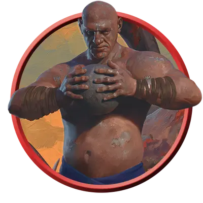

Оржавевшее чудище
Rusted Behemoth
Огромный Конструкт, Нейтральный

Класс Защиты 18 Инициатива +0 (10)
Хиты 157 (15к12 + 60)
Скорость 40 футов
| мод | спас | ||
|---|---|---|---|
| СИЛ | 22 | +6 | +6 |
| ЛОВ | 10 | +0 | +0 |
| ТЕЛ | 19 | +4 | +4 |
| мод | спас | ||
|---|---|---|---|
| ИНТ | 6 | −2 | −2 |
| МДР | 12 | +1 | +1 |
| ХАР | 6 | −2 | −2 |
Иммунитеты Яд; Истощение, Окаменевший, Отравленный
Чувства Тёмное зрение 120 футов, пассивное Восприятие 11
Языки Общий, Великаний
Опасность 9 (5 000 опыта; БВ +4)
Действия
Мультиатака. Чудище совершает три атаки Размашистым ударом или Ржавым ядром в любой комбинации.
Размашистый удар. Бросок рукопашной атаки: +10, досягаемость 10 фт. Попадание: 20 (4к6 + 6) Дробящего урона.
Ржавое ядро. Бросок дальнобойной атаки: +10, дистанция 60/240 фт. Попадание: 15 (2к8 + 6) Дробящего урона, и цель становится Отравленной до конца своего следующего хода.
Реакции
Проржавелая шкура. Условие: По чудищу попадают броском атаки, наносящим Дробящий, Колющий или Рубящий урон. Эффект — Спасбросок Телосложения: Сл 16, каждое существо по выбору чудища в 5-футовой Эманации, исходящей от чудища. Провал: Цель становится Отравленной до конца своего следующего хода.
Бонус мастерства +4
Среда обитания Леса, Прибрежье
Сокровища Личные
Оржавевшие
Конструкты — жертвы сверхъестественного проклятия
Сверхъестественное проклятие Ржавления, охватившее острова Муншэй, проявляется в виде тонкой коркой железа на коже живых существ. Грубое железо легко ржавеет, и кожа приобретает болезненный оранжево-серый оттенок. Если проклятие не остановить, жертва превращается в оржавевшего — живую железную пародию на саму себя, с которой хлопьями осыпается ядовитая ржавчина.
По мере того как затвердевает кожа, опустошается и разум. Оржавевшие ненавидят нетронутую природу и при любой возможности стремятся её уничтожить.
Великаны, поражённые Ржавлением, становятся жуткими махинами, что в бездумной ярости вырывают деревья и вспахивают холмы. Клинки и стрелы отскакивают от их прочной проржавелой шкуры, взметая облака ядовитой оранжевой пыли. Оржавевшие чудища наслаждаются осквернением дикой природы.
Другие оржавевшие
Вы можете превратить любого Великана, Гуманоида, Зверя, Фею или Чудовище в оржавевшего следующим образом: поменяйте тип существа на Конструкт и добавьте ему иммунитет к урону Ядом, а также состояниям Истощение, Окаменевший и Отравленный.